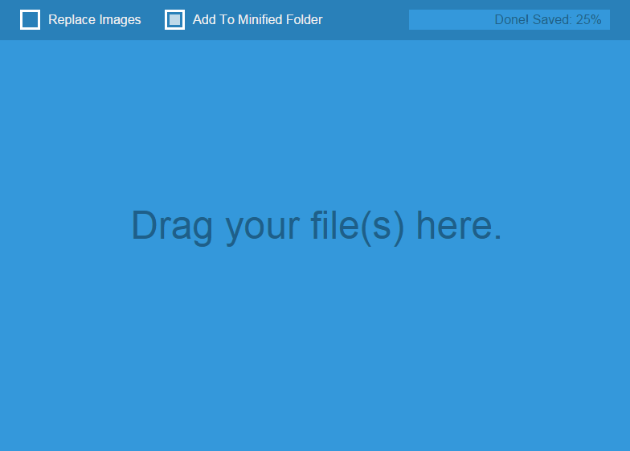

Minnow
Lossless image minification made easy

Quick Start
- 1. Choose an option:
- Replace Images: Replaces any image you minify.
- Add To Minified Folder: Creates a Minified folder and puts minified images there.
- 2. Drag and drop an image or images onto the app.
- 3. Enjoy!
Releases
Windows 32 BitWindows 64 Bit